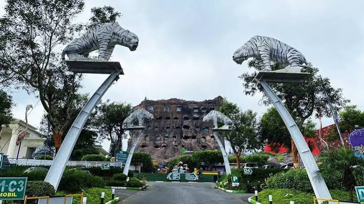

Jatim Park 2
Kota Batu, Jawa Timur

Tentang Jatim Park 2
Jatim Park 2 merupakan kompleks wisata di Kota Batu yang menggabungkan rekreasi dengan pengenalan dunia satwa dan pengetahuan alam. Destinasi ini dikenal dengan Batu Secret Zoo dan Museum Satwa.
Pengunjung dapat mengenal beragam satwa serta mempelajari informasi tentang kehidupan hewan dan lingkungan. Wisata ini dapat menjadi pilihan bagi keluarga maupun pelajar yang ingin menikmati liburan sambil belajar.
Informasi Singkat
- Lokasi: Kota Batu, Jawa Timur
- Jenis wisata: Satwa, edukasi, dan rekreasi
- Daya tarik utama: Batu Secret Zoo dan Museum Satwa
- Cocok untuk: Keluarga, pelajar, dan pencinta satwa
Daya Tarik
- Batu Secret Zoo, area wisata yang memperkenalkan beragam satwa.
- Museum Satwa dengan koleksi dan informasi edukatif tentang satwa.
- Pengalaman belajar tentang keanekaragaman hayati.
- Aktivitas rekreasi yang bisa dinikmati bersama keluarga.
Tips Berkunjung
- Periksa tiket, jam operasional, dan area yang sedang dibuka.
- Ikuti aturan keselamatan dan petunjuk dari petugas.
- Jangan memberi makan atau mengganggu satwa tanpa izin.
- Siapkan waktu yang cukup untuk menjelajahi area wisata.